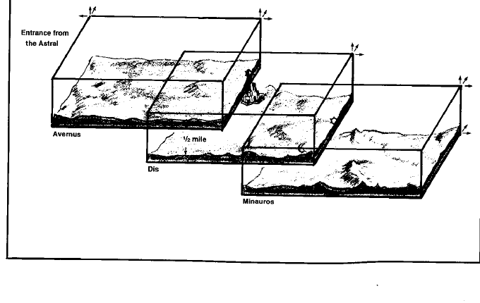

九层地狱 · The Nine Hells
九层地狱是守序邪恶的位面，九层像逐渐向下延伸的巨大台地。各层之间通常有深谷、冰墙、火山、城市或由魔鬼守卫的通道；旅行者若从台地边缘坠落，可能受到持续数日的坠落伤害。
九层分别为阿弗纳斯（Avernus）、迪斯（Dis）、米诺斯（Minauros）、普莱格索斯（Phlegethos）、斯提吉亚（Stygia）、马尔博吉亚（Malbolge）、马莱博吉亚／马勒博吉（Maladomini）、卡厄纳（Caina）和奈瑟斯（Nessus）。

阿弗纳斯是焦土、战争和魔鬼军团的前线；迪斯是铁城和条约之地；米诺斯是沼泽与腐泥；普莱格索斯是燃烧的火焰层；斯提吉亚是冰冻的冥河；马尔博吉亚是巨大的垃圾山；马莱博吉是废墟与重建中的城市；卡厄纳是寒冷的冰层；奈瑟斯则是阿斯摩蒂斯（Asmodeus）的深渊与宫殿。
九层地狱的魔鬼服从严格的等级、契约与官僚制度。阿斯摩蒂斯、贝利亚、巴力泽布、格莱亚、格赫兹等大魔鬼各自控制城市和军团；旅行者可能被诱骗签订契约，也可能被卷入魔鬼之间的政治战争。跨层门户、冥河和魔鬼军团使九层地狱成为持续冒险的完整战役场景。